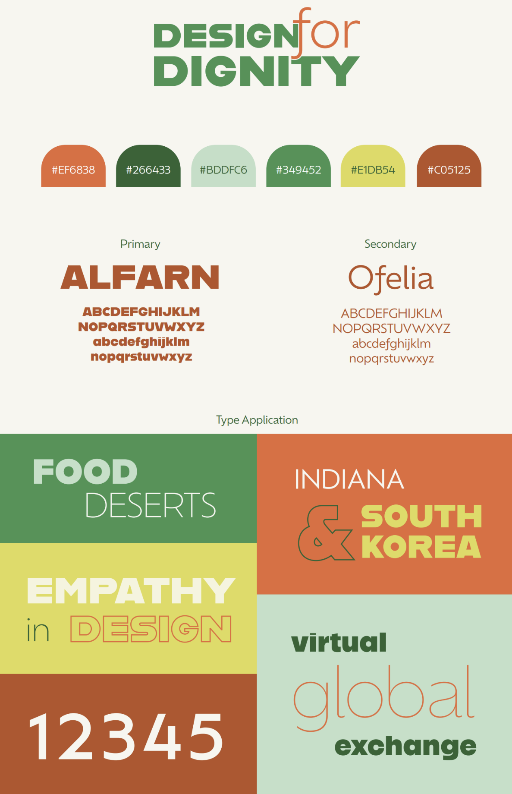
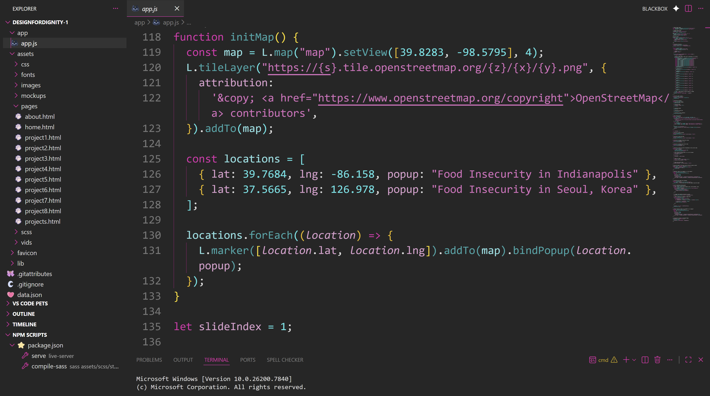
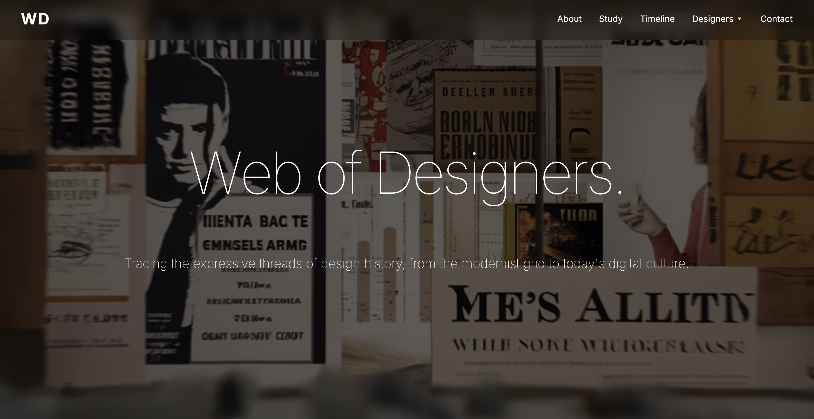

<section class="retrospective-section" id="retrospective">
  <div class="retrospective-container">
    <p class="eyebrow">Honors Senior ePortfolio</p>
    <h1>Retrospective Reflection</h1>

    <p class="intro">
      Throughout my time in the IU Indianapolis Honors College, I have grown
      into a more thoughtful, creative, and community-minded designer. My Honors
      experiences, including international collaboration, applied web
      development, leadership, and mentorship, have shaped how I approach
      design, storytelling, communication, and problem-solving. These
      experiences have also helped me clarify my future goals as a web and
      graphic designer who values accessibility, purposeful design, and
      meaningful user experiences.
    </p>

    <div class="pull-quote">
      <p>
        “My Yonsei University collaboration is evidence that my work achieves
        the IUI Honors College goal of participating in engaged learning
        experiences.”
      </p>
    </div>

    <div class="goal-grid">
      <article class="goal-card">
        <h2>Honors Goal: Active Intellectual Engagement</h2>
        <p>Be active participants in their intellectual experiences.</p>
        <p>
          Through projects like Design for Dignity, my web development
          coursework, and my Honors reflections, I moved beyond simply
          completing assignments. I learned to think critically about why design
          matters, how it communicates meaning, and how it can be used to
          support real people and real communities.
        </p>
      </article>

      <article class="goal-card">
        <h2>Honors Goal: Engaged Learning</h2>
        <p>Participate in at least four engaged learning experiences.</p>
        <p>
          My Yonsei University collaboration, Design for Dignity website, Web
          Developer Internship, and Teaching Assistant / OTEAM leadership
          experiences all gave me opportunities to apply my learning in
          real-world, collaborative, and cross-cultural settings.
        </p>
      </article>

      <article class="goal-card">
        <h2>Honors Goal: Communication + Problem Solving</h2>
        <p>
          Develop strong communication, problem solving, and civic-minded
          skills.
        </p>
        <p>
          These experiences helped me learn how to explain ideas clearly, adapt
          to different audiences, and solve design problems with intention.
          Working with teammates, students, and professionals strengthened my
          ability to collaborate and communicate with purpose.
        </p>
      </article>
    </div>

    <div class="experience-grid">
      <article class="experience-card">
        <div class="experience-image">
          
        </div>
        <h3>Yonsei University Collaboration</h3>
        <p>
          This cross-cultural project focused on food insecurity and required
          collaboration with international students. I later expanded this work
          into a website used to showcase student work, which strengthened my
          ability to design for a wider audience while thinking about audience,
          accessibility, and storytelling.
        </p>
        <p>
          My Yonsei collaboration is evidence that my work achieves the IUI
          Honors College goal of participating in engaged learning experiences,
          especially international and cultural learning.
        </p>
      </article>

      <article class="experience-card">
        <div class="experience-image">
          
        </div>
        <h3>Design for Dignity Website</h3>
        <p>
          Working with a senior designer and industry professional, I
          contributed to both frontend and backend development. This experience
          gave me insight into professional workflows, collaboration, and how
          design can support an important cause beyond the classroom.
        </p>
        <p>
          My Design for Dignity project is evidence that my work achieves the
          IUI Honors College goal of applying knowledge through engaged,
          experiential learning.
        </p>
      </article>

      <article class="experience-card">
        <div class="experience-image">
          
        </div>
        <h3>Web Developer Internship</h3>
        <p>
          My internship with IU Indianapolis allowed me to apply HTML, CSS,
          JavaScript, and other technical skills in a real-world setting. It
          strengthened my problem-solving skills and showed me how important it
          is to create websites that are both functional and user-centered.
        </p>
        <p>
          My internship is evidence that my work achieves the IUI Honors College
          goal of experiential learning.
        </p>
      </article>

      <article class="experience-card">
        <div class="experience-image">
          
        </div>
        <h3>Teaching Assistant + OTEAM Leadership</h3>
        <p>
          As a Teaching Assistant for Introduction to Web Design and a co-leader
          of OTEAM, I learned how to support other students, explain complex
          concepts, and adapt to different learning styles. These roles helped
          me grow as a communicator, mentor, and leader.
        </p>
        <p>
          My Teaching Assistant and OTEAM experience is evidence that my work
          achieves the IUI Honors College goal of developing strong
          communication, problem-solving, and civic-minded skills.
        </p>
      </article>
    </div>

    <div class="reflection-section">
      <h2>Growth as a Designer and Scholar</h2>

      <p>
        Throughout my Honors experience, I developed stronger communication,
        leadership, and technical skills. I learned that good design is not only
        about making something look polished, but about making something useful,
        intentional, and meaningful for the people who will interact with it.
        That mindset changed how I approach every project I create.
      </p>

      <p>
        My Honors coursework also helped shape this growth. In classes such as
        <strong>[insert honors class name]</strong> and
        <strong>[insert another class name]</strong>, I practiced reflection,
        research, and audience awareness in ways that pushed me to think more
        deeply about the purpose behind my work. These classes taught me to
        connect ideas, examine my process, and recognize how learning in and
        outside the classroom can work together.
      </p>

      <p>
        I also grew through the influence of faculty and mentors such as
        <strong>[faculty member name]</strong>, who helped me strengthen my
        creative thinking and confidence. Their guidance encouraged me to
        approach my work with more intention and to take feedback seriously as
        part of the design process.
      </p>

      <p>
        My approach to design has also been influenced by authors and theorists
        such as <strong>Don Norman</strong> and <strong>Ellen Lupton</strong>.
        Norman’s user-centered design ideas reinforced the importance of
        designing for real human needs, while Lupton’s work helped me see
        typography as a tool for communication, emotion, and storytelling. These
        ideas shaped how I think about both visual design and usability.
      </p>

      <p>
        My Teaching Assistant role is evidence that my work achieves the IUI
        Honors College goal of developing strong communication and
        problem-solving skills. It required me to adapt my explanations, support
        students with different learning styles, and think quickly when
        challenges came up. That experience showed me how much patience,
        flexibility, and empathy matter in teaching and teamwork.
      </p>
    </div>

    <div class="quote-strip">
      <p>
        “My Teaching Assistant experience is evidence that my work achieves the
        IUI Honors College goal of developing communication and problem-solving
        skills.”
      </p>
    </div>

    <div class="reflection-section">
      <h2>Connection to My Career Goals</h2>

      <p>
        These experiences directly connect to my career goals as a web and
        graphic designer. I want to create digital work that is visually
        engaging, accessible, and useful to real audiences. My Honors
        experiences taught me how to combine creativity with purpose, and they
        helped me understand that good design should communicate clearly while
        also supporting the needs of the people using it.
      </p>

      <p>
        In the future, I hope to continue building websites, brand identities,
        and digital experiences that reflect thoughtful storytelling and
        user-centered design. The technical and creative skills I developed
        through Honors have given me a stronger foundation for entering the
        field with confidence.
      </p>
    </div>

    <div class="reflection-section">
      <h2>Connection to the Honors Community</h2>

      <p>
        My experience in the Honors College also helped me feel more connected
        to my academic community. Through collaboration, leadership, and peer
        support, I learned that Honors is not just about individual achievement;
        it is also about contributing to a larger environment of learning,
        growth, and shared experience.
      </p>

      <p>
        My involvement in OTEAM and my work with classmates, instructors, and
        collaborators helped me develop a stronger sense of responsibility to my
        community. Those experiences taught me that leadership is not only about
        guiding others, but also about listening, supporting, and creating space
        for other people to grow.
      </p>
    </div>

    <div class="closing-section">
      <h2>Looking Ahead</h2>

      <p>
        As I prepare to graduate, I see myself as an emerging web and graphic
        designer with a strong foundation in collaboration, storytelling, user
        experience, and communication. The Honors College has helped shape both
        my skills and my perspective, preparing me for a meaningful career in
        design and for future opportunities to continue learning and
        contributing to my community.
      </p>

      <p>
        Overall, my Honors journey has helped me become a more thoughtful,
        confident, and intentional designer. My work across classes, projects,
        leadership roles, and engaged learning experiences demonstrates that I
        have met the IU Indianapolis Honors College goals and grown into someone
        ready to take the next step.
      </p>

      <a href="#retrospective" class="back-to-top">Back to top</a>
    </div>
  </div>
</section>
